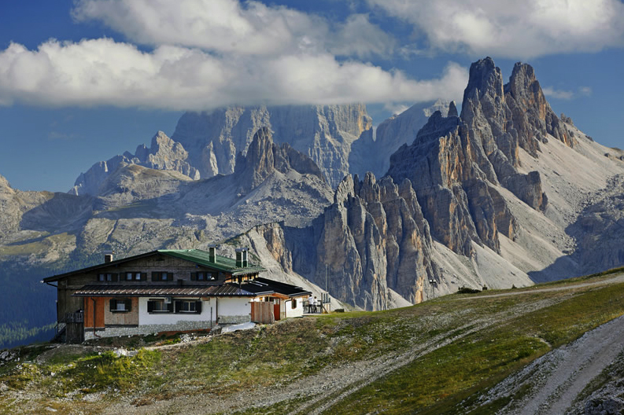
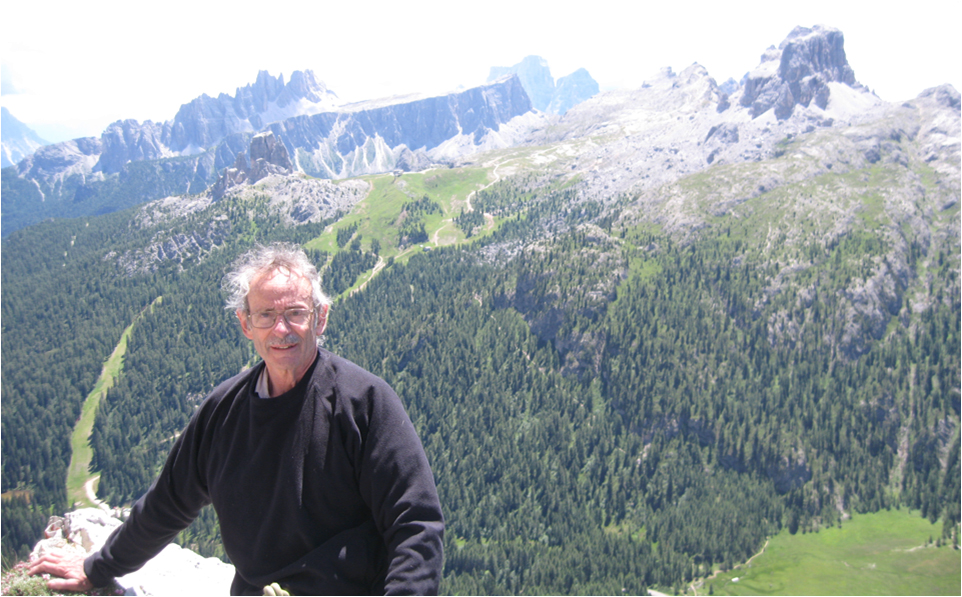
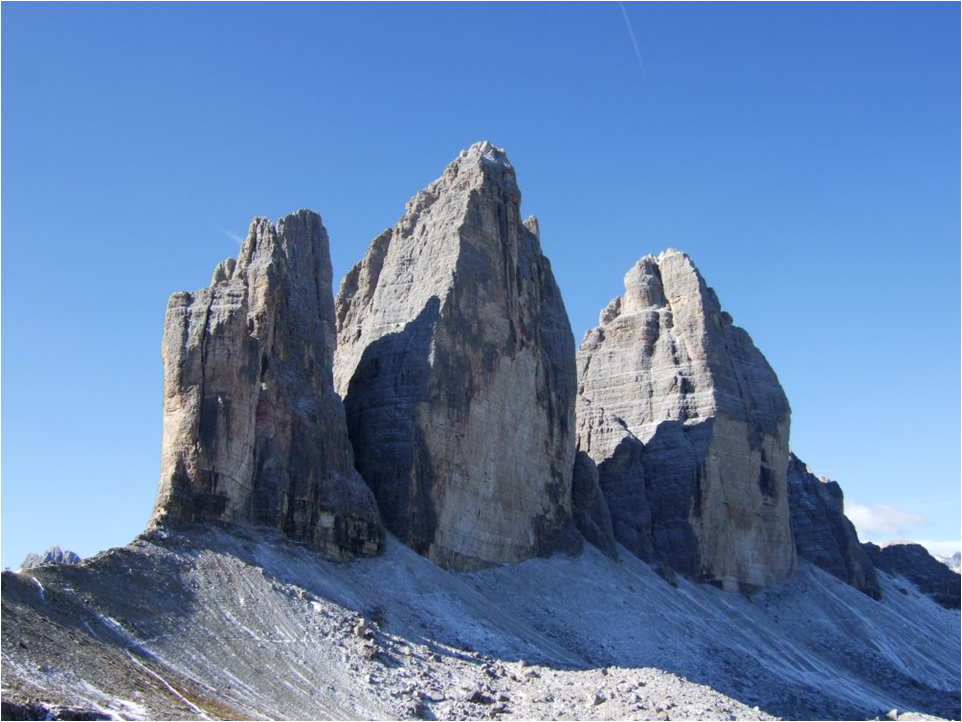
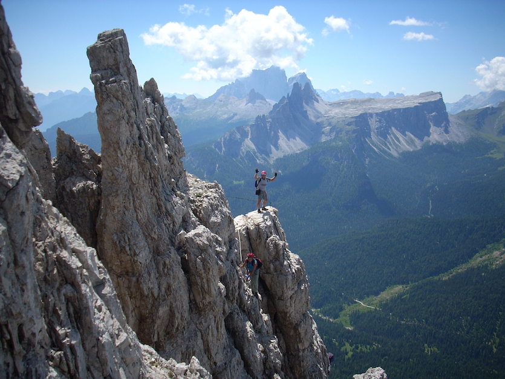
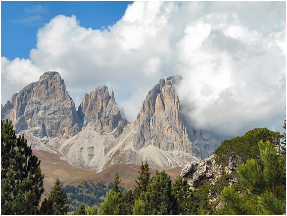

Welcome to ASIC 2013
The Twelfth Annual Summer Interdisciplinary Conference, held at the Grand Hotel Savoia, Cortina d'Ampezzo, in the Dolomites of northern Italy, July 24–30, 2013.

A refugio in the mountains near Cortina d'Ampezzo
The dates were chosen to make it possible for attendees to travel on July 30 to Berlin for the Cognitive Science Conference (Aug 1–4) and the Mathematical Psychology Conference (Aug 4–7).
Grand Hotel Savoia is a five-star hotel with spa facilities (grandhotelsavoiacortina.com). The closest international airports are Venice and Innsbruck, both about 150 km distant, reachable by car, train+bus, or bus.
Cortina d'Ampezzo is the major resort town in the Dolomites, and was once the site of the Winter Olympics. It is surrounded by Dolomite mountain groups, many with lifts that operate in summer and bring visitors high into the mountains to hiking trails, biking trails, climbing areas, rifugios, and via ferrata.

ASIC 2013 organizer, Rich Shiffrin, atop Torre Grande, near Cortina
Richard M. Shiffrin of Indiana University – Bloomington is the organizer: email correspondence should be directed to shiffrin@indiana.edu.
About the conference
The subject matter of the ASIC conferences is interdisciplinary, within the broad frame of Cognitive Science. ASIC uses the very successful format of previous ASIC and AIC conferences: days are free for leisure activities and discussions among participants. The talks are in the later afternoon/early evening, followed by dinner. The date has been chosen to make it convenient for attendees to bring family/friends. The conference is open to all interested parties, and an invitation is NOT needed to attend.
Conference aims
The conference covers a wide range of subjects in cognitive science, including: modeling of cognition; neuroscience and cognitive neuroscience; psychology (perception, psychophysics, attention, information processing, memory and cognition); computer science and artificial intelligence; machine intelligence and learning; methodology and statistics; linguistics, psycholinguistics and computational linguistics; and philosophy of mind and cognitive science.

Tre Cime di Lavaredo: famous Dolomite towers near Cortina
Conference format
There is a single speaking session each day. In past conferences we have had seven 30-minute talks each evening. If the number of attendees is larger than usual this year, speaking time will be extended by 30 minutes, allowing six additional talks, 48 in all. If this number is insufficient, one day will be devoted to shorter talks (no shorter than 15 minutes). If the number of speakers exceeds 56, the organizer will decide which attendees will speak.
The conference starts with registration and a reception with wine, beer, drinks and food from 15:30–16:15 on Wednesday, July 24. On subsequent days there are drinks and light snacks from ~16:00–16:15, followed by a session of seven (or more) spoken presentations that include a mid-session drink break.
Location
The hotel is about two blocks downhill from the center of town on the main road into town (one way toward the town center). It is on Via Roma 62. If approaching from the east on SS51 (d'Alemagna), follow the one-way traffic onto Via Roma; the hotel is on the left.
Schedule
There is a single speaking session each day, each with seven (or more) talks, held in a conference room at the Grand Hotel Savoia.
Normal talk duration is 30 minutes including questions and discussion. However, if there are more than 42 presenters, some talks are assigned shorter time limits.
Registration
If you are planning to attend ASIC 2013, fill out the registration form and submit your registration fee.
This fee (slightly higher than in previous years, because this is a 5-star hotel) pays for rental of the conference room, equipment rentals, snacks and drinks at conference breaks, the opening reception, and several charges for drinks at dinner.
Fee schedule (US dollars)
| Timing | Fee |
|---|---|
| Prior to January 1, 2013 | $200 |
| January 1 – March 1, 2013 | $275 |
| After March 1, 2013 | $350 |
In addition to the registration fee per person, you may purchase additional guest vouchers for other persons attending the opening reception (20 euros) and breaks (10 euros per day).
Lodging
A block of rooms is held at the Grand Hotel Savoia in Cortina d'Ampezzo, Italy — a five-star hotel with spa facilities.
Hotel website: grandhotelsavoiacortina.com. Lodging rates include breakfast and dinner for each person each day. Reservations should be made early, starting in fall 2012.
Reservations require a 30% deposit. Cancellation: the deposit is returned without penalty if cancellation is made by June 25, 2013. Cancellation after June 25 but before seven days prior to the reservation start forfeits the 30% deposit. Cancellation within seven days of the reservation start requires payment in full for the entire reserved period.
Rates
- One person/room: €100/day
- Two persons/room (1 or 2 beds upon request): €160/room/day
- Three persons (2 or 3 beds upon request): €235/room/day
Children: ages 0–6 free, ages 7–12 €64. For example: one adult and one or two children ages 0–6: €100/room/day; two adults and one child ages 0–6: €160/room/day; one adult and one child ages 7–12: €144/room/day; one adult and two children ages 7–12: €208/room/day; two adults and one child ages 7–12: €224/room/day.
To book a room
- Send an email to shiffrin@indiana.edu, saying you are going to attend and wish to book a room. You will shortly receive a return email with a code that allows you to book on the hotel website.
- Go to the hotel website: grandhotelsavoiacortina.com.
- Under "Booking Online," enter your reservation dates and the conference code in the box labeled "Codice cliente."
- Click "Book Now" and follow the instructions on subsequent screens.
For special requests that cannot be entered via the website, contact the hotel directly.
Parking
There is limited free parking on the hotel grounds, both in front and rear (about 15 spaces), first come first served. A secure parking garage under the hotel is served by valet parking at a special conference rate of 10 euro/day. Free city parking is also available in two locations, the nearest about 900 meters from the hotel.
Internet
Wireless internet (WIFI) is free to participants, both in rooms and public areas.
Address & telephone
Grand Hotel Savoia, Via Roma, 62 – 32043 Cortina d'Ampezzo
Tel: +39 0436 3201 · Fax: +39 0436 869186
Email: info@grandhotelsavoiacortina.it
Facilities & services
Attendees have free entry to the swimming pool and sauna. There are charges for use of the spa and spa services, with reduced rates available upon request — a 10% discount for conference participants.
Food & Dining
Given the lateness of the conference talks, and the quality of the Savoia restaurant, the lodging price is half board, including meals at the hotel.
Half board includes an American buffet breakfast and a full dinner each day. Lunches, if desired, can be purchased separately, either at the hotel or at restaurants in town. The hotel also has a bar serving afternoon tea. The registration fee pays for food and drink at the opening reception, at session breaks, and (limited) water, wine, and beer at dinners.
The day begins with an American buffet breakfast from 7:30–10:30; earlier service can be arranged on request the previous day.
Travel
Travel to and about the Grand Hotel Savoia, Cortina d'Ampezzo, Italy.
It is probably worth exploring the area with Google Maps and Google Earth.
By plane
The main international airports are Venice, Italy (148 km, 1 hr 53 min by car) and Innsbruck, Austria (164 km, 2 hrs 9 min by car). Other nearby airports are Treviso (118 km) and Verona (242 km). Flights can be cheaper to Milan Malpensa, but the distance increases to 451 km, 4.5 hrs by car.
By train
The nearest railway station is Calalzo di Cadore, 35 km away, on the Venice or Padova–Calalzo line. From the station there is public bus service to Cortina (Cortina Express).
By car
From the south or north, enter/leave Cortina on SS51. From the east or west, enter/leave Cortina on SR48.
By bus
Service from Venice Marco Polo Airport or Mestre Railway Station on the Cortina Express (tel: +39 0436 867350), about 2 hrs 15 min; 2012 prices were 22 euro.
Local travel near Cortina
Walking within town is easy given the town's size. Local orange buses take you to places in the immediate vicinity; Dolomitibus connects to surrounding towns and outlying areas, useful for hikers since they mostly run east and west to mountain passes from which cable cars or chair lifts ascend. Combination tickets for buses and lifts offer good savings for multi-day stays.
Activities
The opportunities for outdoor activities in the summer in the Cortina area are endless: walking, hiking, scrambling, via ferrata, canyoning, mountaineering, rock climbing, mountain biking, road biking, and parasailing.

Via Ferrata near Cortina d'Ampezzo
Cortina is also a center for arts and music in the summer, with many concerts, shows and performances around the time of the conference, plus museums, parks, adventure parks, and nearby towns and villages with rich histories.
It is perhaps easiest to reach the start of these activities by car, but there is excellent bus service in and around Cortina, including schedules that stop at the various lifts and access points.
Area & Dolomite mountain groups around Cortina
West: Lagazuoi 2,762 m (SR48; ~17 km) · Fanes 2,980 m (SR48; ~17 km) · Tofane 3,244 m (lift access from Cortina) · Cinque Torri 2,361 m (SR48; ~18 km)
North and NW: Pomagagnon 2,450 m (SS51; ~6 km) · Cristallo 3,221 m (SR48; ~7 km) · Tre Cime di Lavaredo 3,000 m (SP49; ~15 km) · Cadini 2,800 m (SP49; ~15 km) · Croda dei Toni 3,094 m (SS52; ~45 km)
East and SE: Sorapiss 3,205 m (SR48; ~20 km) · Antelao 3,264 m (SS51; ~11 km)
South: Pelmo 3,168 m (SP251; ~35 km) · Civetta 3,220 m (SP20; ~40 km)
Chairlifts and cable cars near Cortina
Cortina is surrounded by a system of chairlifts and cable cars, essentially all open in the summer, from 9 AM with last rides down at 5 PM. One system starts in Cortina and goes all the way to Tofane, one of the highest peaks in the area. These lifts give access to the most dramatic hiking trails, bike paths, walking paths, via ferrata, and climbing areas, and can be used one-way (often walking up, taking the lift down).
Other noteworthy activities
- A travel itinerary focusing on cheese (and wine): the "Road of Cheeses"
- Sampling of special local foods, such as turnips, honey, cabbage
- Churches and historical sites in local villages and towns
- Museums and historical sites relating to the two world wars, including a World War I museum high on Monte Piana
Climate, Weather & Clothing
Cortina city center is at an altitude of 1,224 m (4,015 ft), surrounded by Dolomite mountain groups up to 3,244 m (10,643 ft).

The altitude ensures cool temperatures. In late July the average high temperature in town is about 70°F, and the average low is about 50°F — lower still as you head into the mountains. Nonetheless the summer sun can be quite hot and sun cream is usually a necessity.
Contact
Email correspondence is preferred.
Conference organizer
Rich Shiffrin
Indiana University – Bloomington
shiffrin@indiana.edu
Tel: 812-855-4972 · Fax: 812-855-9871
Webmaster / Conference Coordinator
Ruth Eberle
Indiana University – Bloomington
reberle@indiana.edu
Patrick Craig
Indiana University – Bloomington
pjcraig@indiana.edu
Postal address
Annual Summer Interdisciplinary Conference (ASIC 2013)
c/o Prof. Richard Shiffrin, Psychology Department
Indiana University, 1101 E. 10th St., Bloomington, IN 47405